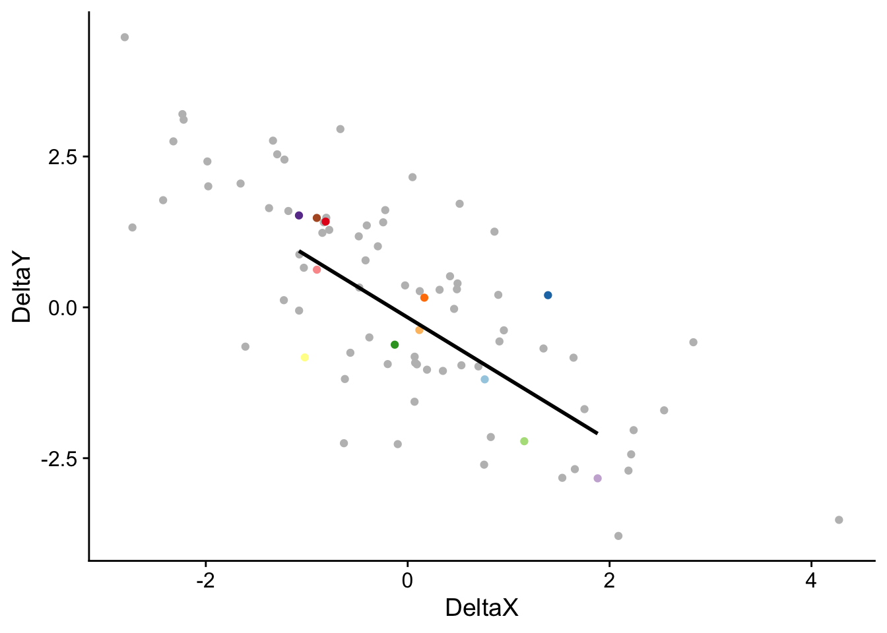

5 Panel-Daten
5.1 Backdoors durch unbeobachtbare Heterogenitäten
Betrachte das Panel-Regression-Modell
\[\begin{align} Y_{it} = \beta_0 + \beta_1 B_{it} + \beta_2 X_i + \beta_3 U_i \epsilon_{it},\label{eq:unobshetmodel} \end{align}\]
wobei \(U_i\) unbeobachtete und \(X_i\) beobachtete, zeitlich-invariante Heterogenitäten zwischen den Beobachtungseinheiten \(i=1,\dots,n\) sind. Wie üblich ist \(B_i\) die Behandlungsvariable und \(\beta_1\) der interessierende Effekt einer Veränderung von \(B_i\) auf \(Y_i\).
Angenommen wir beobachten \(Y_{it}\) und \(B_{it}\) für \(T=1\), also für eine Periode. Bei Korrelation zwischen den (aufgrund der \(U_i\)) unbeobachtbaren zeit-invarianten Effekten \(\delta_i\) und der Behandlungsvariable \(B\) kann der kausale Effekt \(\beta_1\) nicht identifiziert werden. Diese Situation ist in Abbildung 5.1 dargestellt.
Es bestehen Backdoors durch die \(U_i\), die wir nicht mit der Schätzung von \[\begin{align} Y_{it} = \beta_0 + \beta_1 B_{it} + \beta_2 X_i + \varepsilon_{it},\label{eq:femodelfail} \end{align}\] einer (fehlspezifizierten) Regression, schließen können.
5.2 Differenzen und Fixed Effects
Anhand von Panel-Daten mit \(T\geq2\) können die in Kapitel 5.1 beschreibene Backdoors durch unbeobachtbare zeit-invariante Heterogenitäten mit Regression geschlossen werden.
Definiere \[\delta_i = \beta_0 + \beta_3 U_i.\] Nach einsetzen in \(\eqref{eq:unobshetmodel}\) erhalten wir
\[\begin{align} Y_{it} = \delta_i + \beta_1 B_{it} + \beta_2 X_i + \epsilon_{it} \label{eq:femodel}, \end{align}\]
mit einheiten-spezifischen Konstanten \(\delta_i\), \(i=1,\dots,n\). Die \(\delta_i\) können als individuelle Achsenabschnitte (“feste Effekte”) interpretieren werden, weshalb Modell \(\eqref{eq:femodel}\) auch als “Fixed-Effects-Modell” bezeichnet wird.
5.3 Regression in Differenzen
Wir betrachten zunächst den in Abbildung 5.2 dargestellten DGP für \(T=2\) Zeitperioden. In dieser Situation können Backdoors durch \(U\) anhand einer simplen Transformation von Modell \(\eqref{eq:femodel}\) geschlossen werden: Regression in Zeit-Differenzen zwischen den Perioden \(t=2\) und \(t=1\), \[\begin{align} \Delta Y_{it} = \beta_1 \Delta B_{it} + e_{it}, \qquad i=1,\dots,n,\qquad t=1,2 \label{eq:femodeldiff}, \end{align}\] wobei \(\Delta\,Y_{it} := Y_{i2} - Y_{i1}\) und \(e_{it} := \epsilon_{i2} - \epsilon_{i1}\) für \(t=2\). Beachte, dass \(\Delta\delta_i=\Delta X_i=0\). Differenzieren ergibt also ein Modell, in dem weder für \(X_i\) noch für die (unbeobachtbaren) \(\delta_i\) kontrolliert werden muss, damit \(\beta_1\) identifiziert werden kann. Der Behandlungseffekt kann mit KQ geschätzt werden.
Wir veranschaulichen die Schätzung eines Behandlungseffekts mit dem Differenzen-Ansatz für einen simulierten Datensatz paneldata.csv. Der mit \(n=12\) Beobachtungseinheiten, die über \(T=8\) Perioden beobachtet wurden. Alle Einheiten weisen unbeobachtbare zeit-invariante Heterogenitäten auf. Der wahre Behandlungseffekt beträgt jeweils \(\beta_1 = -1\).1
1 Der (R code für den) DGP ist diesem StackExchange-Post entnommen.
# Datensatz 'paneldata.csv' einlesen
paneldata <- read_csv("datasets/paneldata.csv") %>%
select(X, Y, ID, time, col)# Datensatz balanced?
library(plm)
is.pbalanced(
x = paneldata,
index = c("ID", "time")
)[1] TRUE# Panel-Dimensionen bestimmen
paneldata %>%
summarise(
N = unique(ID) %>% length(),
T = unique(time) %>% length()
)# A tibble: 1 × 2
N T
<int> <int>
1 12 8library(fixest)
# Naive KQ-Schätzung für t = 1
panel_KQ <- feols(
fml = Y ~ X,
data = paneldata %>%
filter(time == 1)
)
summary(panel_KQ)OLS estimation, Dep. Var.: Y
Observations: 12
Standard-errors: IID
Estimate Std. Error t value Pr(>|t|)
(Intercept) -0.325557 1.977509 -0.16463 8.7252e-01
X 3.512724 0.255879 13.72804 8.1671e-08 ***
---
Signif. codes: 0 '***' 0.001 '**' 0.01 '*' 0.05 '.' 0.1 ' ' 1
RMSE: 3.12745 Adj. R2: 0.944573library(cowplot)
# Plot: Naiver KQ-Schätzer für t = 1
(
p_panel <- ggplot(
mapping = aes(x = X, y = Y)
) +
geom_point(
data = paneldata %>%
filter(time > 1),
color = "gray",
show.legend = F
) +
geom_point(
data = paneldata %>%
filter(time == 1),
mapping = aes(color = col),
show.legend = F
) +
# Naive KQ-Schätzung f. t = 1
geom_smooth(
data = paneldata %>%
filter(time == 1),
method = "lm",
se = F,
col = "black"
) +
theme_cowplot()
)# Panel-Schätzer: KQ-Regression in Differenzen
panel_diff <- feols(
fml = d(Y) ~ d(X),
data = paneldata %>%
filter(
dplyr::between(time, 1, 2)
),
panel.id = ~ ID + time
)
summary(panel_diff)OLS estimation, Dep. Var.: d(Y, 1)
Observations: 12
Standard-errors: Clustered (ID)
Estimate Std. Error t value Pr(>|t|)
(Intercept) -0.16789 0.280039 -0.599525 0.560968
d(X, 1) -1.02316 0.335264 -3.051800 0.011012 *
---
Signif. codes: 0 '***' 0.001 '**' 0.01 '*' 0.05 '.' 0.1 ' ' 1
RMSE: 0.891809 Adj. R2: 0.522708# Plot: KQ-Schätzer in Differenzen
paneldata_diff <- paneldata %>%
mutate(
DeltaX = X - dplyr::lag(X),
DeltaY = Y - dplyr::lag(Y)
) %>%
drop_na()
ggplot(
mapping = aes(x = DeltaX, y = DeltaY)
) +
geom_point(
data = paneldata_diff %>%
filter(time > 2),
color = "gray",
show.legend = F
) +
geom_point(
data = paneldata_diff %>%
filter(time == 2),
mapping = aes(color = col),
show.legend = F
) +
geom_smooth(
data = paneldata_diff %>%
filter(time == 2),
method = "lm",
se = F,
color = "black"
) +
theme_cowplot()
Erweiterung auf alle Perioden:
# Naive KQ-Schätzung für t = 1,...,8
panel_KQ <- feols(
fml = Y ~ X,
data = paneldata
)
summary(panel_KQ)OLS estimation, Dep. Var.: Y
Observations: 96
Standard-errors: IID
Estimate Std. Error t value Pr(>|t|)
(Intercept) -1.45318 1.008859 -1.44042 0.15307
X 3.76470 0.134364 28.01868 < 2.2e-16 ***
---
Signif. codes: 0 '***' 0.001 '**' 0.01 '*' 0.05 '.' 0.1 ' ' 1
RMSE: 4.63461 Adj. R2: 0.891928library(cowplot)
# Plot: Naiver KQ-Schätzer für t = 1,...,8
ggplot(
mapping = aes(x = X, y = Y)
) +
geom_point(
data = paneldata %>%
filter(time > 1),
color = "gray",
show.legend = F
) +
geom_point(
data = paneldata %>%
filter(time == 1),
mapping = aes(color = col),
show.legend = F
) +
# Naive KQ-Schätzung f. t = 1
geom_smooth(
data = paneldata %>%
filter(time == 1),
method = "lm",
se = F,
col = "black"
) +
theme_cowplot()
# Panel-Schätzer: KQ-Regression in Differenzen
panel_diff <- feols(
fml = d(Y) ~ d(X) - 1,
data = paneldata,
panel.id = ~ ID + time
)
summary(panel_diff)OLS estimation, Dep. Var.: d(Y, 1)
Observations: 84
Standard-errors: Clustered (ID)
Estimate Std. Error t value Pr(>|t|)
d(X, 1) -0.982042 0.135217 -7.26269 1.6178e-05 ***
---
Signif. codes: 0 '***' 0.001 '**' 0.01 '*' 0.05 '.' 0.1 ' ' 1
RMSE: 1.12641 Adj. R2: 0.571235# Plot: KQ-Schätzer in Differenzen (alle t)
ggplot(
data = paneldata_diff,
mapping = aes(x = DeltaX, y = DeltaY)
) +
geom_point(
color = "gray",
show.legend = F
) +
geom_point(
mapping = aes(color = col),
show.legend = F
) +
geom_smooth(
method = "lm",
se = F,
color = "black"
) +
theme_cowplot()
5.3.1 Fixed Effects
Modell \(\eqref{eq:femodel}\) kann weiterhin als eine Regression mit \(n-1\) Dummy-Variablen und einer Konstante umgeschrieben werden:
\[\begin{align} Y_{it} = \beta_0 + \beta_1 X_{it} + \gamma_2 D^{(2)}_i + \gamma_3 D^{(3)}_i + \cdots + \gamma_n D^{(n)}_i + \epsilon_{it} \label{eq:drmodel}. \end{align}\]
Das Modell \(\eqref{eq:drmodel}\) hat \(n\) verschiedene Achsenabschnitte — einen für jede Beobachtungseinheit.2 Die Modelle \(\eqref{eq:femodel}\) und \(\eqref{eq:drmodel}\) sind gleichwertige Darstellungen des Fixed-Effects-Modells.
2 Für \(n-1\) Einheiten ist der individuelle Achsenabschnitt damit \(\beta_0 + D^{(i)}_i\) und für eine Einheit \(\beta_0\). Diese Einheit wird auch als Referenzkategorie bezeichnet. Alternativ kann das Modell mit \(n\) Dummies und ohne die Konstante \(\beta_0\) geschrieben werden.
Fixed Effects können Endogenität aufgrund simultaner Kausalität oder ausgelassender zeitlich variierender Faktoren (Variablen, welche die abhängige Variable beeinflussen und mit der Behandlungsvariable korreliert sind) nicht beheben. In solchen Szenarien können Panel-Methoden in Kombination mit einer Schätzstrategie basierend auf Instrument-Variablen hilfreich sein. Wir betrachten solche Schätzer in Kapitel Kapitel 6.
Interaktive Illustration von Panel-Schätzern
OLS estimation, Dep. Var.: Y
Observations: 96
Fixed-effects: ID: 12
Standard-errors: Clustered (ID)
Estimate Std. Error t value Pr(>|t|)
X -1.04507 0.10473 -9.97865 7.5526e-07 ***
---
Signif. codes: 0 '***' 0.001 '**' 0.01 '*' 0.05 '.' 0.1 ' ' 1
RMSE: 0.746006 Adj. R2: 0.996829
Within R2: 0.602694library(plm)
# Random-Effects-Schätzung
panel_RE <- plm(
formula = Y ~ X,
model = "random",
index = c("ID", "time"),
data = paneldata
)
summary(panel_RE)Oneway (individual) effect Random Effect Model
(Swamy-Arora's transformation)
Call:
plm(formula = Y ~ X, data = paneldata, model = "random", index = c("ID",
"time"))
Balanced Panel: n = 12, T = 8, N = 96
Effects:
var std.dev share
idiosyncratic 0.6437 0.8023 0.229
individual 2.1732 1.4742 0.771
theta: 0.811
Residuals:
Min. 1st Qu. Median 3rd Qu. Max.
-6.0355 -1.9888 -0.1651 1.9196 6.4374
Coefficients:
Estimate Std. Error z-value Pr(>|z|)
(Intercept) 18.34586 2.31566 7.9225 2.328e-15 ***
X 0.77031 0.26346 2.9238 0.003458 **
---
Signif. codes: 0 '***' 0.001 '**' 0.01 '*' 0.05 '.' 0.1 ' ' 1
Total Sum of Squares: 818.14
Residual Sum of Squares: 749.94
R-Squared: 0.083362
Adj. R-Squared: 0.07361
Chisq: 8.54862 on 1 DF, p-value: 0.0034579paneldata <- paneldata %>%
mutate(
# Vorhergesagte Werte für FE-Schätzung
yhat_FE = fitted(panel_FE),
# Vorhergesagte Werte für RE-Schätzung
yhat_RE = predict(panel_RE)
)
ggplot(
data = paneldata,
mapping = aes(x = X, y = Y)
) +
geom_point(
mapping = aes(color = col),
show.legend = F
) +
# Pooling
geom_smooth(
method = "lm",
se = F,
col = "black"
) +
# Fixed Effects
geom_line(
mapping = aes(y = yhat_FE, group = ID, col = col),
show.legend = F
) +
# Random Effects
geom_line(
mapping = aes(y = yhat_RE),
lty = "dashed",
show.legend = F
) +
theme_cowplot()
5.4 Beispiel: Einkommen und Demokratie
Eine Vielzahl polit-ökonomischer Standardwerke und Studien (bspw. Dahl 1971; Huntington 1991; Rueschemeyer, Stephens, und Stephens 1992) liefert vermeindliche Belege für einen zentralen Grundsatz der Modernisierungstheorie: Ein höheres Pro-Kopf-Einkommen erhöht die Nachfrage der Bevölkerung nach politischer Freiheit und demokratischen Insitutionen. Acemoglu u. a. (2008a) argumentieren, dass der in derartigen länderübergreifenden Analysen mit Pooling häufig als positiv geschätzte Zusammenhang zwischen Einkommen und Demokratisierung nicht kausal interpetiert werden sollte. Ein Grund hierfür ist, dass ausgelassene länderspezifische zeit-invariante (möglicherweise unbeobachtbare) Faktoren, die sowohl die ökonomische Entwicklung als auch die Stärke demokratischer Institutionen beeinflussen, wahrscheinlich sind. Um diese mögliche Ursache für Endogenität des Zusammenhangs \[\begin{align} \text{Demokratisierung}_i = \beta_0 + \beta_1\,\text{PK-Einkommen}_i + \epsilon_i \end{align}\] zu adressieren, nutzen Acemoglu u. a. (2008a) einen Panel-Regressionsansatz ähnlich zu \[\begin{align} \text{Demokratisierung}_{it} = \delta_i + \beta_1\,\text{PK-Einkommen}_{it} + \epsilon_{it} \end{align}\] mit Fixed Effects \(\delta_i\), die für länderspezifische zeitinvariante Faktoren kontrollieren.
Das Kernergebnis von Acemoglu u. a. (2008a) ist, dass es keinen kausalen Zusammenhang zwischen dem Einkommen (Wirtschaftswachstum) und der Demokratisierung gibt. Die Autoren zeigen, dass historische und geografische Faktoren, die sowohl das Einkommen als auch die politischen Institutionen beeinflussen, den beobachteten Zusammenhang verzerren können.
Für die nachfolgenden Code-Beispiele nutzen wir einen Auszug des Datensatzes aus dem Replikationspaket für Acemoglu u. a. (2008a), siehe Acemoglu u. a. (2008b).
acem <- readxl::read_xls(
"~/Downloads/113251-V1/Income-and-Democracy-Data-AER-adjustment.xls",
sheet = "5 Year Panel"
)# Pooling
feols(
fml = fhpolrigaug ~ lrgdpch,
panel.id = ~ country + year,
data = acem,
)OLS estimation, Dep. Var.: fhpolrigaug
Observations: 1,090
Standard-errors: Clustered (country)
Estimate Std. Error t value Pr(>|t|)
(Intercept) -1.210494 0.094546 -12.8032 < 2.2e-16 ***
lrgdpch 0.217745 0.011194 19.4518 < 2.2e-16 ***
---
Signif. codes: 0 '***' 0.001 '**' 0.01 '*' 0.05 '.' 0.1 ' ' 1
RMSE: 0.273788 Adj. R2: 0.404579acem_f <- acem %>%
filter(year %in% c(1970, 1995)) %>%
group_by(code) %>%
summarise(
dlrgdpch = diff(lrgdpch),
dfhpolrigaug = diff(fhpolrigaug)
) %>%
drop_na()
lm(
formula = dfhpolrigaug ~ dlrgdpch,
data = acem_f
) %>%
summary()
Call:
lm(formula = dfhpolrigaug ~ dlrgdpch, data = acem_f)
Residuals:
Min 1Q Median 3Q Max
-0.9582 -0.1541 -0.1172 0.2081 0.7079
Coefficients:
Estimate Std. Error t value Pr(>|t|)
(Intercept) 0.12629 0.04008 3.151 0.00214 **
dlrgdpch 0.03298 0.06354 0.519 0.60486
---
Signif. codes: 0 '***' 0.001 '**' 0.01 '*' 0.05 '.' 0.1 ' ' 1
Residual standard error: 0.3422 on 101 degrees of freedom
Multiple R-squared: 0.00266, Adjusted R-squared: -0.007214
F-statistic: 0.2694 on 1 and 101 DF, p-value: 0.6049ggplot(
data = acem_f,
mapping = aes(
x = dlrgdpch,
y = dfhpolrigaug
)
) +
geom_hline(yintercept = 0, lty = 2) +
geom_text(
mapping = aes(label = code),
position = position_jitter(
height = .05,
seed = 1234
)
) +
geom_smooth(method = "lm", se = F) +
labs(
x = "Diff. Log(Pro-Kopf-BIP) (1970 - 1995)",
y = "Diff. Demokratie-Index (1970 - 1995)"
) +
theme_cowplot()
# time + country fixed effects
feols(
fml = fhpolrigaug ~ l(fhpolrigaug) + l(lrgdpch)
| year + country,
panel.id = ~ country + year,
cluster = ~ country,
data = acem,
)OLS estimation, Dep. Var.: fhpolrigaug
Observations: 955
Fixed-effects: year: 9, country: 150
Standard-errors: Clustered (country)
Estimate Std. Error t value Pr(>|t|)
l(fhpolrigaug, 1) 0.377490 0.048071 7.852772 7.4009e-13 ***
l(lrgdpch, 1) 0.008417 0.031587 0.266461 7.9025e-01
---
Signif. codes: 0 '***' 0.001 '**' 0.01 '*' 0.05 '.' 0.1 ' ' 1
RMSE: 0.16588 Adj. R2: 0.748871
Within R2: 0.140859# time-fixed effects
feols(
fml = fhpolrigaug ~ l(fhpolrigaug) + l(lrgdpch)
| year,
panel.id = ~ country + year,
cluster = ~ country,
data = acem,
)OLS estimation, Dep. Var.: fhpolrigaug
Observations: 955
Fixed-effects: year: 9
Standard-errors: Clustered (country)
Estimate Std. Error t value Pr(>|t|)
l(fhpolrigaug, 1) 0.702504 0.036023 19.50147 < 2.2e-16 ***
l(lrgdpch, 1) 0.073042 0.009861 7.40714 8.8791e-12 ***
---
Signif. codes: 0 '***' 0.001 '**' 0.01 '*' 0.05 '.' 0.1 ' ' 1
RMSE: 0.191614 Adj. R2: 0.7178
Within R2: 0.705629